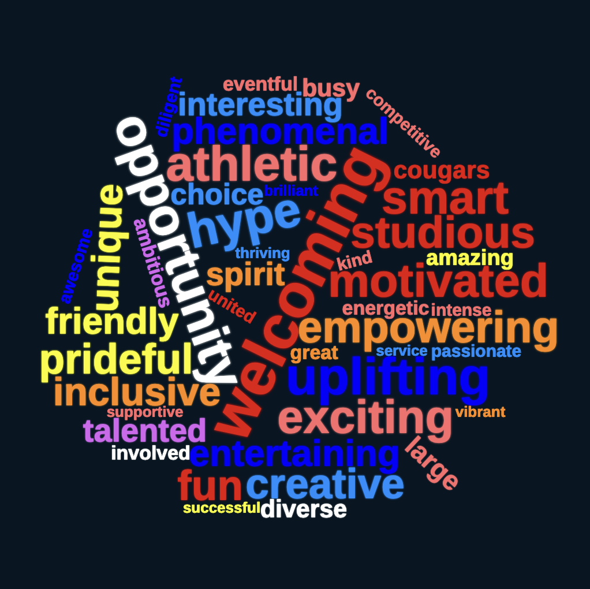

Incoming Freshman: Welcome to Campo.


| Students describe Campo | |
|---|---|
| Sonam Mangu, Class of 2024 | "Though going into high school with new people and new teachers seems terrifying, just know that the nerves and fear will fade very soon. Once you find your rhythm, you'll be excited to go to Campo everyday until you graduate because those new people and new teachers will make life and learning so much more fun and interesting." |
| Max Marino, Class of 2024 | "It is an awesome environment where the sports are the best, the teachers know what they're doing, and everyone is friendly." |
| Nina Damiano, Class of 2024 | "Campo is a place where you can really explore who you are and who you want to be in the future; take advantage of the opportunities you are given to experiment and try new things!" |
| Addison Van Veen, Class of 2027 | "There's something for everyone and it feels like a high school movie every day once you find your people and your interests." |
| Madeline Sheng-Williams, Class of 2027 | "It's a lot at first, but it's much easier to manage once you see how much you have available to you." |
| Hendrik Linnen, Class of 2027 | "It's a great experience to meet new friends and people." |
| Gabe Cohen, Class of 2027 | "You get to meet so many new friends and have so much choice when it comes to clubs, classes, and academies." |
| Lucy Ross, Class of 2027 | "If Campo were a stairwell, coming into Freshman year is a big step up. Campolindo is a very fun, inclusive, and academic school that focuses on the needs of their students." |
| Layla Coy, Class of 2027 | "Don't feel pressured to be someone you're not, trust me, whoever you are, Campo will accept you." |
| Olive Dey-Toth, Class of 2027 | "It is generally very welcoming with plenty of clubs and communities that are happy to have new members that are eager to participate on and off campus." |